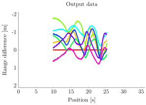

Tdoa
This is the first part of a TDOA-system used for estimating the time differences.
tdoa
This is the first part of a TDOA-system used for estimating the time differences. It has been developed as a master's thesis project at Lund University.
Taking a number of sound files as input it outputs the range-differences:

Prerequisites
The scripts have only been tested with Matlab 2014a (inlcuding the Image Processing Toolbox).
Hopefully they also work with earlier (and later) versions of Matlab.
GNU Octave should also work if you fix audioread.
Usage
Download the scripts and Matlab functions and open them in a new workspace.
Run main.
Here's a dependency graph of the code:
Input data
The script takes any number of sound files as input data.
The recordings have to be synchronized.
To use readaudio the file names have to correspond and end with an integer, e.g., channel-1.aiff, channel-2.aiff etc.
So far only input sound files recorded with a sample rate of 96000 Hz have been used to test the scripts.
Other sample rates should also work, but might require some extra tweaking of the settings.
Sample input data will be uploaded soon!
Contributing
Any suggestions for improvements and feedback is welcome! It could be optimizing the Matlab-code, porting the scripts to Python, or test results from using the scripts.